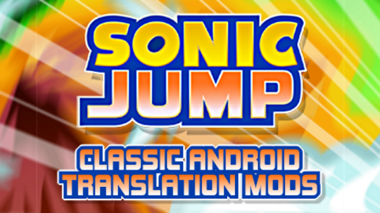
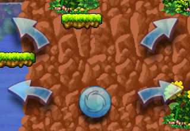
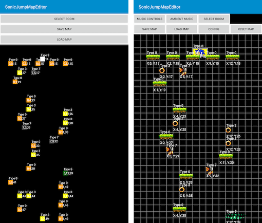
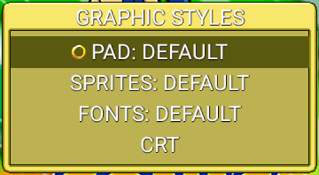
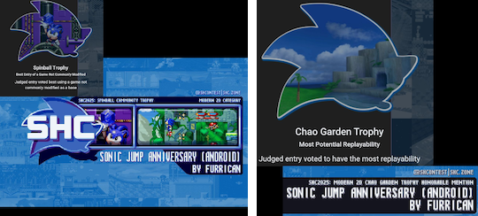

Android Mods
Introduction
The Android Mods page is dedicated to the history of Sonic Jump Revival and its previous versions throughout history!
In the Collaborations section are external links to give credits to those who collaborated to the mods.
In the Anniversary full mod section is an external link to find and download the SHC version of Sonic Jump Anniversary.
GdGohan's first mod
First known mod
The first known mod ever made for the Android port of Sonic Jump's AirPlay version is named "Sonic Jump 2" by GdGohan.
This mod has a different title screen and the music tracks all uses instruments found in Sonic games on the SEGA Mega Drive/Genesis.
GdGohan used an app named MIDI Clef to change the soundfont of the .midi soundtrack.
The most interesting change about this mod is that the PuyoSega service condition is bypassed, making the game playable instead of being locked behind an error message.
Furrican's discovery
Furrican discovered the Android port of the Sonic Jump's AirPlay version back in early 2022.
However, he couldn't find the original .apk file at the time and instead found the GdGohan's mod.
And when Furrican managed to find the original .apk file of the game, he realized that the game didn't work, due to the PuyoSega service condition which prevents players to play the game.
As the result, he transferred the source code from the GdGohan's mod to the original game to work on his first mods.
Furrican's first mods
April 5th 2022

The Sonic Jump Classic mods was released on Game Jolt and itch.io.
The Classic mods were a pack of .apk files.
Each .apk file contains a different language.
The presented languages were the 6 lanugages from the original AirPlay version, alongside the Japanese language from the original Android port.
The version 1.1.0 was released immediately.
This update allows players to press anywhere on the screen to perform the double jump, instead of pressing on the "Select icon" (only when VIRTUAL PAD: OFF).
Brazilian translation
BEGINNING:
At the same day as the mods released, a Game Jolt user named Dark GUI (formerly known as GuilhermeSonic) contacted Furrican about the Portuguese language not being the Brazilian one.
Therefore, Furrican sent the text to him and he worked on the Brazilian Portuguese translation.
While the translation was done just 2 days later, the text implementation took so much time, due to the text being stored in .dat files and other external reasons.
SEPTEMBER 7th 2022:
The Brazilian Portuguese language has been added to the mods pack.
2025 Collaborations
Introduction
On January 2025, Furrican wanted to celebrate Sonic Jump's 20th anniversary by releasing a major update to his Sonic Jump Classic.
The update was named Sonic Jump Anniversary.
Sonic Jump Anniversary was originally going to be a simple update to bring the Language Select menu and fix the stage crash found on Android 8.0 and higher.
However, a collaboration changed the course of this update, making Sonic Jump Anniversary more ambitious than it was originally planned.
GdGohan
Furrican already met GdGohan and asked him to work on Sonic Android mods.
GdGohan agreed to help working on the Sonic Jump Anniversary project.
Furrican's plan was to release Sonic Jump Anniversary for the Sonic Amateur Game Expo (SAGE) 2025.
However, GdGohan had way more ideas for this project by adding brand-new gameplay elements and other features.
Because of GdGohan's ambitious ideas, Furrican decided to change plans for Sonic Jump Anniversary by releasing it for the Sonic Hacking Contest (SHC) 2025 instead.
So they decided to release a game demo while they are working on the full version for later.
During the multiple months of developments, GdGohan often came up with new features for Sonic Jump Anniversary, some more interesting than others.
However, some of his ideas were either too complicated or too out-of-place to be feasible, but compromises can sometimes be found.
Additionally, GdGohan published videos of the Sonic Jump Anniversary mod development to his YouTube channel.
Beta testers
From February to July are multiple users who wanted early-access to Sonic Jump Anniversary.
While the game was still under development, they still had early-access builds.
Some are beta testers like Sonic Blast, Star and ZueMods, others like Silas the sonic fan, Theusx games and Classic Sonic The Hedgehog were uploading their gameplay footages on YouTube.
External Links
Anniversary Demo
February 18th 2025
Exactly 20 years after the very-first version of Sonic Jump, the Sonic Jump Anniversary Demo was released.
This demo introduced the new planned features (language select and stage crash), but also Shadow the Hedgehog as a brand-new playable character.
Additionally, the Anniversary demo introduces a secret character only unlockable via the cheat code.
The Anniversary Demo introduced a brand-new animated introduction for the loading screen.
This introduction is based on the China Mobile version of Sonic Jump.
Being a demo, the stage select and cutscenes aren't present, and there is a 5-minute time limit.
When the time runs out, you are brought back to the main menu.
Alongside the Anniversary Demo was an update to the Classic mods (v1.2.0).
This update allows the Classic mods to get rid of the stage crash.
However, this update was a limited edition and was only available until the full version of Sonic Jump Anniversary was released.
April 7th 2025

The Anniversary Demo received an update by adding 2 diagonal arrow buttons above the main ones when the VIRTUAL PAD is ON.
Those arrow buttons are taken inspiration from Pleasant Goat Jump, a Chinese-exclusive mobile game similar to Sonic Jump.
The diagonal arrow buttons was suggested by a Chinese user named 任索嘉盒Ninesogabox, who was inspired by Pleasant Goat Jump.
The diagonal arrow buttons act as a combination between moving left or right and perofrming the double jump at the same time.
However, while these diagonal arrows were removed from the full version of Sonic Jump Anniversary (due to those arrows being distracting), their commands are still present.
Map Editor
June 2025

Somewhere on June 2025, Furrican has made maps of the first 3 zones of Sonic Jump, because nobody has done it at the time.
Those maps served as a basis for another GdGohan's idea.
In that same month, GdGohan managed to make a Map Editor application for Sonic Jump Anniversary.
He first converted the map.bin file into a .txt file, giving the maps logic better understanding.
However, after looking at some maps, both Furrican and GdGohan found out that the Y-position of objects located in maps are in 8-bit values.
This is problematic, as the objects may have higher locations than 255.
Therefore, GdGohan found a compromise by making the Y-position values into 16-bit for .txt files.
The Map Editor has received updates over time, improving the object presentation and user interface.
It also received new options such as music options and extra configurations.
July 2025
The Map Editor was originally a separate application of the game.
However, GdGohan later put the Map Editor in the game by making it accessible from the main menu.
Anniversary full mod
October 4th 2025
October 4th 2025 was the public-release of the SHC 2025, alongside the full version of Sonic Jump Anniversary.
This update has 2 versions: a regular version and a SHC edition.
The source code of the SHC version is also available to download via the SONIC HACKING CONTEST link down-below.
Because of the long mod development, Sonic Jump Anniversary introduces a lot of features.
The new features include the Map Editor, Game Events, Internet functionalities, and more (mentioned down-below)...
GRAPHIC STYLES menu

GdGohan first added an option to change the virtual pad style to make it resemble the one from the 360x640 version of Sonic Jump.
Then, he added an option to add CRT filter effects to the screen to give the game a more nostalgic flair.
The sprites and fonts options came afterwards to resemble the AirPlay version of Sonic Jump found on J2ME phones.
In the Sonic Jump Anniversary trailer, you can see the options menu being different from the full version.
Also, the J2ME option for the PAD STYLE used to be named S40 (in reference to the Nokia S40, the phone used to run the 360x640 version of Sonic Jump).
While Furrican was first thinking about locking these options behind the cheat code, it was finally decided to put these options in a sub-menu named GRAPHIC STYLES.
In the SHC version, the J2ME fonts were the default fonts to showcase both Furrican and GdGohan's modding capabilities.
Multiplayer and Shadow

The Multiplayer game mode was meant to be available from the start, but due to its poor implementation, it was decided to lock it behind the cheat code.
In fact, Shadow the Hedgehog was originally planned to simply be the second player for the Multiplayer game mode.
However, due to the unfortunate decision for the this game mode, another thing has to be done for Shadow as a playable character.
Thankfully, GdGohan gave an interesting feature to Shadow by making his movement physics different to Sonic's.
Shadow story

GdGohan also had an idea to make a Shadow story, based on the story from Sonic X Shadow Generations.
This story is available from the new story select menu.
However, because the Shadow story was unfinished, due to time constraints, Furrican wanted to lock the story select menu behind the cheat code.
But GdGohan wasn't pelased about the idea.
Ultimately, the story select menu was available from the start in the SHC version to showcase their modding capabilities.
SHC reception

While Sonic Jump Anniversary didn't have a good reception among the judges, it did received 2 trophies.
The Spinball Trophy for being the most unusual game to be modded, and the Chao Garden Trophy for having the most potential replayability.
External Links
Revival Beta mod
Sonic Mobile Revival
Back in July 2025, Furrican was thinking about the idea of collaborating with the Sonic Runners Revival team in order to make a brand-new project: The Sonic Mobile Revival team.
The goal of this project is to preserve old and abandoned mobile applications from the Sonic franchise.
However, the collaboration with the Sonic Runners Revival team didn't get through, but the project of preserving Sonic mobile applications remains.
The project has been renamed into Sonic Mobirev by early 2026.
Before the release
On February 2026, GdGohan was implementing a new structure to use character sprites in the game in order to add more playable characters into the game.
The original character sprite sheet was only designed for Sonic in mind, adding other playable characters (aside from Shadow) impossible.
In the meantime, Furrican asked a translator named Alex Khayrullin to translate Sonic Jump Revival into Ukrainian.
Alex Khayrullin is a well-known translator who also worked on on Sonic Time Twister and Sonic Triple Trouble 16-bit as a French and Ukrainian translator.
The translation was done the following month.
On March 2026, GdGohan has managed to implement a new way to add playable characters by separating their sprites in folders ("player" folder) inside the assets folder.
Also, more configurations by GdGohan are added in order for character sprites to be positioned perfectly and remove jumping sprites when using the other characters abilities.
Around that time, new ideas were considered from both Furrican and GdGohan, such as the inclusion of Tails, Knuckles and Amy, as well as different abilities for each character.
GdGohan even thought about an ability option in the character select menu, but it was put aside.
However, some unused code related to the ability option can be found in the Game_Draw file.
On April 2026, Furrican has managed to improve the J2ME fonts by replacing the ones in the Anniversary mod by the ones from the "font.png" sprite sheet, making the text more faithful to the J2ME versions.
He even brought a font used for the bigger Chinese text in the Ruansky version of Sonic Jump.
April 22th 2026

On April 22th 2026, Sonic Jump Anniversary has been turned into Sonic Jump Revival alongside the release of the Sonic Mobirev website.
While this can be considered a major update, Sonic Jump Revival was a beta version, due to some new features not being polished.
Because of this, this version is marked as "v3.0.0 - Beta".
The new features include the Ukrainian language, the improved J2ME text and 2 new playable characters (Tails and Knuckles).
Amy Rose was planned as a new playable character as well, but due to complications regarding sprite positioning at that time, she was put aside.
Also, the new characters were planned to be unloackable over game progression, but that feature didn't come out.
Mod Loader

Between April and July 2026, GdGohan was working on a new feature for Sonic Jump Revival named the Mod Loader.
The Mod Loader would server 2 purposes:
- To allow players to load their own mods directly into the game, rather than use a third-party application to rebuild the game mod.
- To include new features into the game or via a mod based on decisions between Furrican and GdGohan, making the game more polished.
The Mod Loader was planned to be highlighted as a new feature for the definitive version of Sonic Jump Revival, but due to this feature not working correctly, it was unlikely to be highlighted.